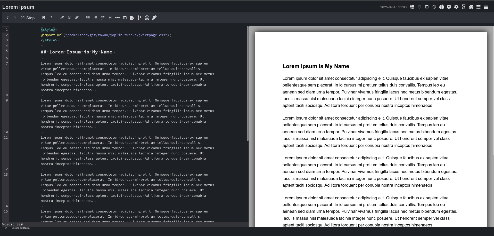
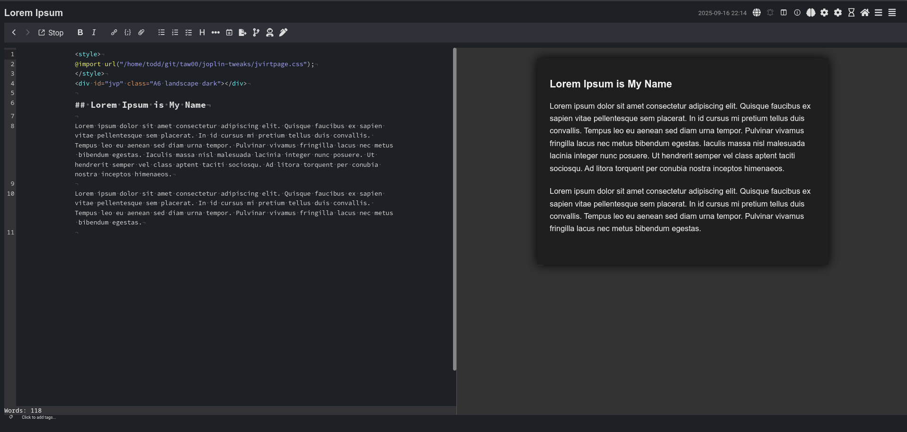

Style customizations for Joplin, a secure open-source, notebook application.
Included in this repository are snippets of CSS that customize the look and feel of the Joplin UI, its markdown previewer, and how documents are presented in Joplin Cloud.
Table of Tweaks
Tweaks to the Markdown Previewer & Joplin Cloud
- stylesheet: render a note preview as a virtual page - jvirtpage.css
- snippet (exported note): exported notes should not include scrollbars
- snippet (exported note): remove excess spaced framing of exported content
- snippet (exported note): remove automated note titles from exported note
- snippet (rendered and exported note): toggle the embedded display of linked-to PDF
- snippet (rendered and exported note): disable links
Tweaks to the Joplin UI
- snippet (UI): remove the markdown vs. rich text editor switch (button)
- snippet (UI): remove the tags widget
- snippet (UI): make the tags widget smaller/thinner
- snippet (UI): make the bottom status bar thinner
The snippets below are added to the userstyle.css style
configuration file. jvirtpage.css is expected to be
imported into a document directly. See the associated documentation.
Stylesheet: jvirtpage.css
Documentation: jvirtpage.md
jvirtpage.cssInstall Joplin's "Import Local CSS" plugin and restart
Create note in Joplin and add these three lines to the top …
<style>
@import "https://taw00.github.io/joplin-tweaks/jvirtpage.css";
</style>or …
Install Joplin's "Import Local CSS" plugin and restart
Download this repository …
git clone https://github.com/taw00/joplin-tweaks
<style>
@import "/path/to/joplin-tweaks/jvirtpage.css";
</style>and now …
Save it, and you should see a pretty, virtualized page in the preview pane in the Joplin application.
Want an A5 landscape virtual page with a dark themed? Add this fourth line to your note …
<div id="jvp" class="A5 landscape dark"></div>

userstyle-snippet-exports-no-pre-scrollbars.css
Joplin exports that include things like programming code will include scrollbars in the PDF that are, of course, just visual clutter. Instead we trim any code that extends beyond the visual window and remove any scrollbars. It is up to the document creator to reformat those code blocks so that they appear on the page completely.
userstyle-snippet-exports-remove-padded-frame.css
When exporting a raw note, Joplin will frame it and add margin space around the note. We remove that when this snippet of CSS.
userstyle-snippet-exports-remove-title.css
Most of the time, I simply do not want Joplin adding a note title to my exported content. If I want a title, I will add it to the note myself. This snippet removes that inserted/automated title.
userstyle-snippet-toggle-embedded-pdf.css
Joplin, by default, will expand a PDF within a functional viewport
within a note. An embedded PDF, if you will. This feature is very
convenient, but I also don't have a need for it most of the time. This
CSS snippet adds a toggle of sorts. Add this snippet to your
userstyle.css configuration and add
<div id="jtweaks no-pdf"></div> anywhere within
your note to turn this behavior off. And if you configured the CSS to
turn off the display of PDFs by default (like I do), do the same, but
add <div id="jtweaks show-pdf"></div> when you
want to show that PDF.
Note: This switch is also built into jvirtpage.css,
and so, if you use both there may be a conflict. Or not. Experiment.
:)
userstyle-snippet-disable-links.css
Sometimes you just wanna disable links in a note. Or, as if often the
case, in it's exported PDF. The jweaks switches are:
no-links and no-links-export
These are added to the userchrome.css styling
configuration file.
userchrome-snippet-remove-editor-switching-button.css
Do you only use the markdown editor and not the "rich text editor" then get rid of that button that lets you toggle between the two.
userchrome-snippet-remove-click-to-add-tags.css
Some folks don't use Joplin's tagging system at all. If so, maybe just remove that bit of UI and give yourself some extra space.
userchrome-snippet-shrink-click-to-add-tags.css
Do you use tags, but wished the tags widget that sits below your note in the UI was a bit thinner? This does exactly that.
userchrome-snippet-shrink-status-bar.css
You may have to adjust this depending on if you shrink the tags, remove click to add tags, etc.
Joplin is Copyright (c) Laurent Cozic
This readme, the documentation, and another additional work is …
Copyright (c) Todd Warner <t0dd [at] protonmail [dot]
com>
This work is licensed under Attribution 4.0 International. To view a
copy of this license, visit http://creativecommons.org/licenses/by/4.0/
If you have any questions or concerns, open an issue in Github or email me at t0dd [at] protonmail [dot] com.
Several people have asked how they could thank me for work that I have done that they found valueable. Well, one easy way to thank me is to "buy me a cup of coffee": https://buymeacoff.ee/toddwarner Or just send me an email (see above) and express your appreciation. Or star this on Github. Or whatever.
Cheers!